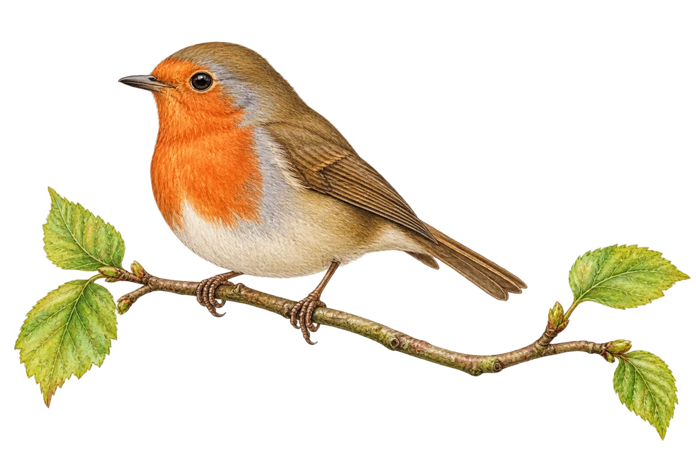

A page from
Sample journalThe Willow family

RobinOur little garden visitor
A robin on
the garden gate
We stood very still, and it came a little closer. A bright orange chest, a tiny song, and a very big moment for us.
Noticed by Maya & Dad
Little moments, collected together.01